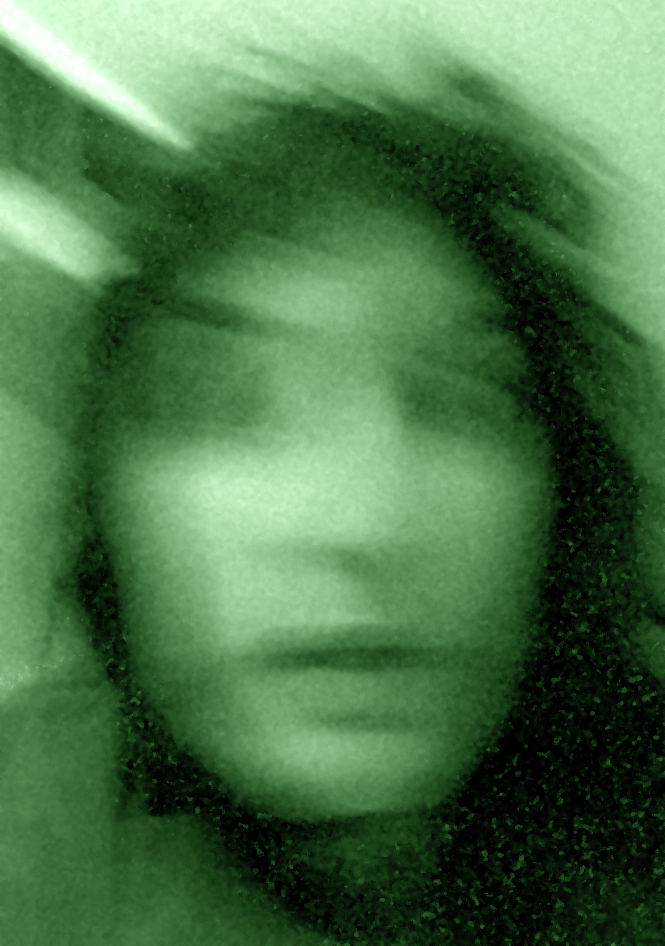

The Music in the Walls
A Haunted Exeter busting
What mysteries did this house entomb?
In 2018, our intrepid team of busters were called to a house in Exeter, Devon to investigate some strange sightings. What they found there would chill the bones of even the hardiest amongst them.
The Sightings
The team had been called out due to reports of "cold spots", "unexplainable mischeivous activity" and sometimes, late at night, "strange music eminating from the walls". The house was rented by a group of local students, who had been unable to excel in their studies due to the unwanted prescence in their abode. The team agreed to carry out a preliminary investigation, consisting of a night spent alone in the house. They settled down for what they assumed would be another long, uneventful night...

What We Found
We quickly realised that the presence in this house was more than the fanciful imagination of the students that lived there. The first thing we noted was the cold. As can be seen in the picture above, we all had to wrap up warm, even with the houses "central heating" on. Clearly the work of a mischevious spirit. Then, we noticed the works of a poltergeist. It began with small things - dirty knives appearing on the counter, the thud-thud-thud of footsteps on the stairs, when we were all in one room.
Then it got more intense. As we ate our takeaway pizzas, we managed to snap a photo of a figure in the back of the room. As the camera died away however, the mysterious figure was gone. We started to hear a strange, tune-less, rhythmless sound echoing around the house, like the plucking of a guitar string too tightly wound. We attempted to communicate with the presence, asking questions aloud, but whenever we spoke up, the sound would stop, and those footsteps would rush upstairs again, tapping out a complicated pattern in the hallway. After a few minutes of silence, though, the tuneless plucking would begin again.
The final piece of evidence we collected was when I set up a camera in an un-used upstairs bedroom, from which the strange sounds had beed loudest. I left the camera up there, on a movement-activated trigger, and the morning after our observations checked out the footage. What I found disturbs me to this day. Despite no-one else being present in the building, there is unmistakenly a human figure in this image. Viewer Discretion is advised.
